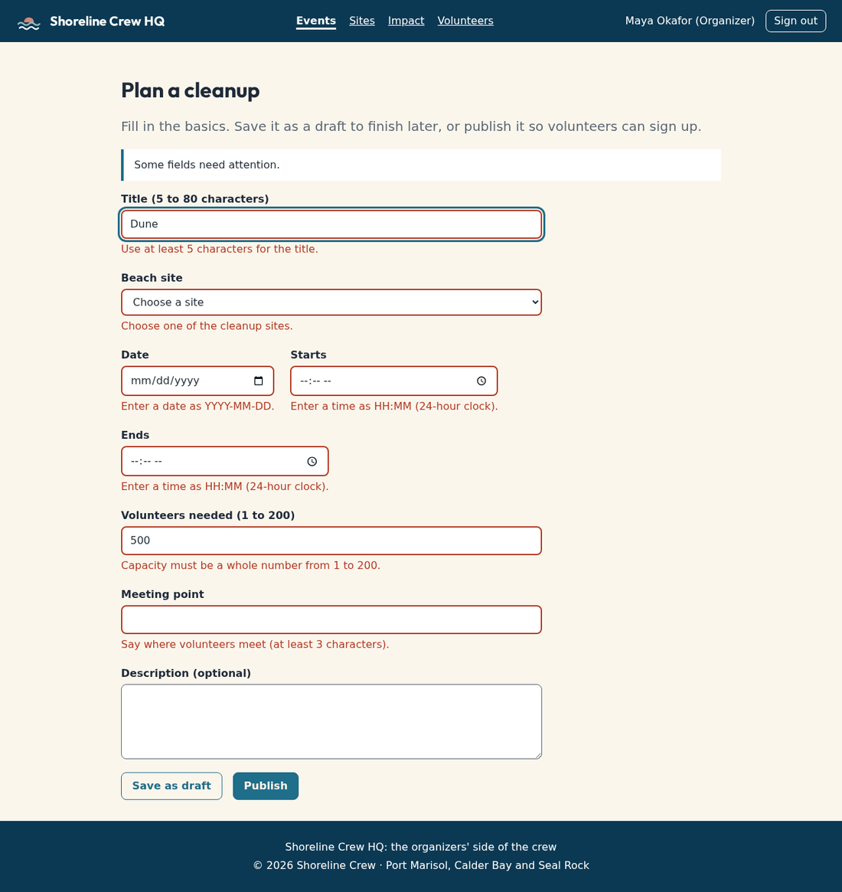
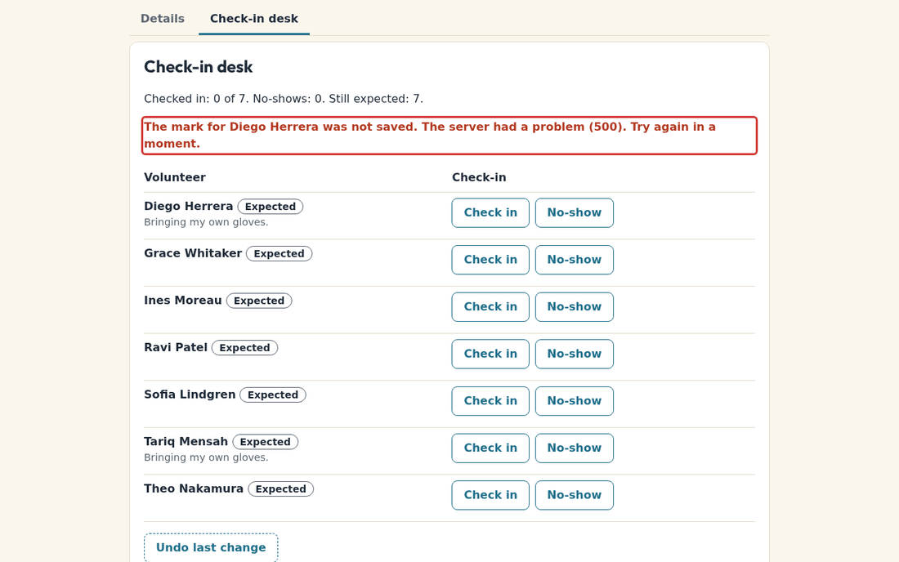
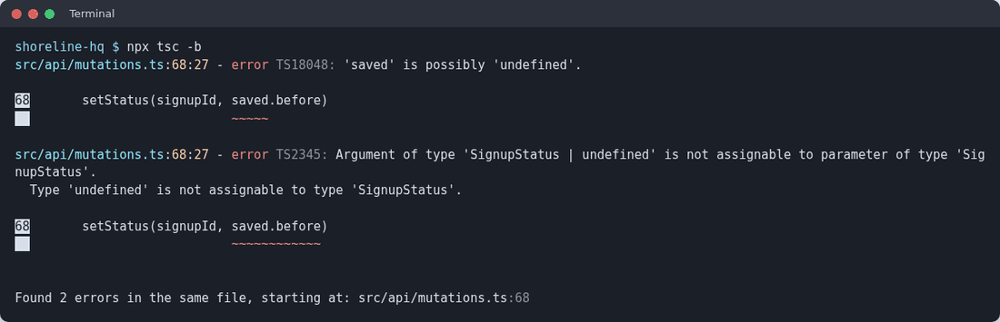
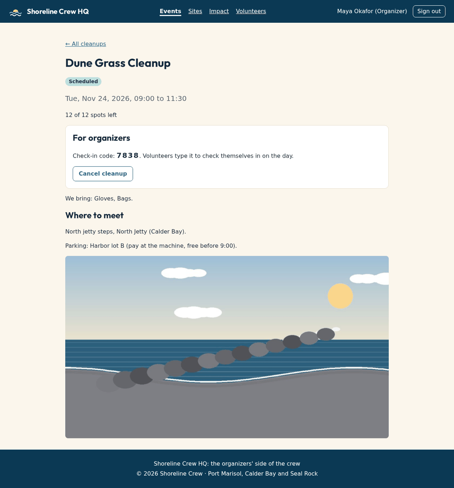
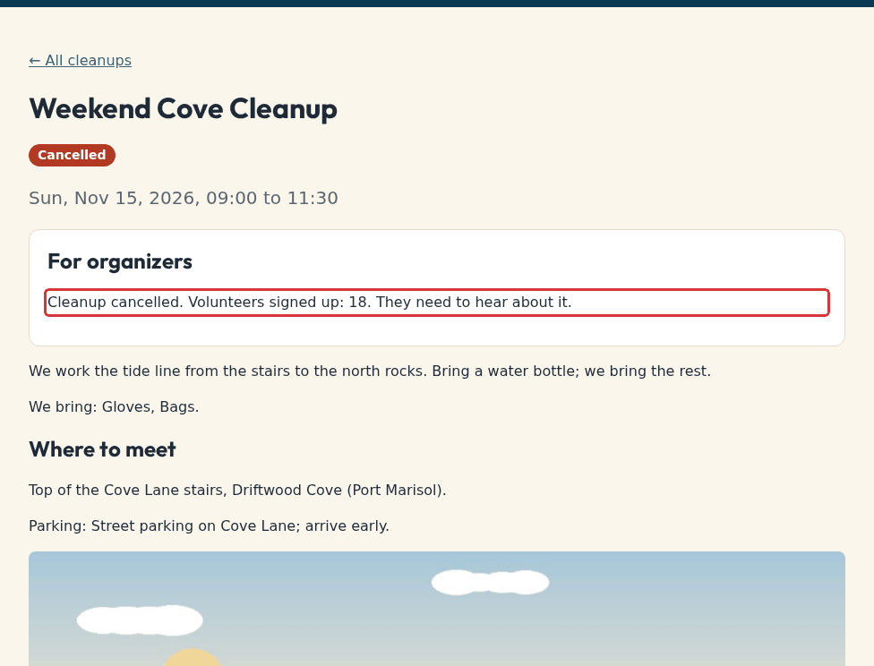

✍️ Lesson 7.2: Mutations
Fill in the planning form and press Publish: the HQ says "Ready to save", and nothing reaches shoreline-api. Cancel a cleanup: "Nothing is sent". Check volunteers in: the marks vanish when you reload. The HQ can read and remember, but it cannot change anything yet. Today it learns to. You will send new cleanups, cancellations and check-in marks to the API with TanStack Query's mutations, tell the cache which answers are out of date afterwards, show the API's own field messages when it says no, and make the check-in desk feel instant by showing each mark before the API has answered, and taking it back if the save fails.
🎯 Learning Objectives
By the end of this lesson, you will be able to:
- Send typed
POSTandPATCHrequests and check what comes back - Write
mutationOptionsfactories and run them withuseMutation,mutateandmutateAsync - Invalidate the cache by key after a change, and explain which entries a change makes out of date
- Show an API's 400
fieldErrorsunder the fields they belong to - Decide when an update should be optimistic, and write one with
onMutate, a rollback inonErrorand a refetch inonSettled
📦 Code for this lesson
Starting code: lesson-25-start.zip · Finished code: lesson-25-end.zip. Each folder has a README with the commands to run it. Copy .env.example to .env.local in shoreline-hq before npm run dev.
In This Lesson
📝 Changing Server Data
A query reads; a mutation changes something on the server: creating a cleanup (POST), changing one (PATCH), deleting one (DELETE). TanStack Query treats them differently, and for good reasons. A query runs by itself whenever a component needs its data; a mutation runs only when you call it, because "create a cleanup" must happen once, when the organizer presses Publish, not every time a component mounts. A query's answer is kept in the cache under a key; a mutation's answer is not cached at all. What a mutation leaves behind is a cache that is out of date, and cleaning that up is your job.
💡 Mental model: the harbor office's change forms
In Lesson 7.1 the harbor office kept a logbook of readings. Now crew members hand in change forms: "add a cleanup on the north jetty", "cancel Saturday's sweep". The clerk sends each form to head office (the API), which may accept it or send it back with notes in the margins ("this date is in the past"). Once head office accepts a form, the clerk crosses out every logbook entry it affects, so the next person who asks gets a fresh reading. For small, everyday forms, a busy clerk pencils the change into the logbook straight away and rubs it out if head office says no. Those are the three ideas of this lesson: mutations, invalidation and optimistic updates.
A mutation needs a mutation function: something that sends the request and returns a promise. Like the query functions, it lives next to the code that knows the API, and it is typed from end to end. The HQ's write requests share one helper in client.ts that sends JSON and checks the answer with a type predicate, exactly like getJSON does for reads:
/** Send JSON with POST or PATCH, and check the JSON that comes back */
async function sendJSON<T>(
method: 'POST' | 'PATCH',
path: string,
body: unknown,
isT: (value: unknown) => value is T,
): Promise<T> {
const response = await request(path, {
method,
headers: { 'Content-Type': 'application/json' },
body: JSON.stringify(body),
})
const data: unknown = await response.json()
if (!isT(data)) {
throw new Error(`Unexpected data from ${method} /api${path}`)
}
return data
}Then, as with queries, a factory puts the pieces together. mutationOptions is the mutation twin of queryOptions: it takes the options and gives them back with their types worked out.
/** Cancel a scheduled cleanup. Waits for the API: a big change should not look done before it is. */
export function cancelEventMutation() {
return mutationOptions({
mutationFn: (eventId: string) => patchEvent(eventId, { status: 'cancelled' }),
onSuccess: () => queryClient.invalidateQueries({ queryKey: ['events'] }),
})
}A component runs it with useMutation, which returns an object with a function to start the mutation and its status. TypeScript reads every type from the factory: the variables (what you pass in) from the mutation function's parameter, and the data (what comes back) from its promise. The trick from Lesson 6.3, passing values to a function that wants a number, shows all three:
import { useMutation } from '@tanstack/react-query'
import { cancelEventMutation } from './api/mutations.ts'
function wantsNumber(value: number) {
return value
}
export function Scratch() {
const cancel = useMutation(cancelEventMutation())
cancel.mutate(42) // what does mutate take?
wantsNumber(cancel.data) // and what comes back?
wantsNumber(cancel.error)
return null
}Expected output
src/Scratch.tsx:10:17 - error TS2345: Argument of type 'number' is not assignable to parameter of type 'string'.
10 cancel.mutate(42) // what does mutate take?
~~
src/Scratch.tsx:11:15 - error TS2345: Argument of type 'CleanupEvent | undefined' is not assignable to parameter of type 'number'.
Type 'undefined' is not assignable to type 'number'.
11 wantsNumber(cancel.data) // and what comes back?
~~~~~~~~~~~
src/Scratch.tsx:12:15 - error TS2345: Argument of type 'Error | null' is not assignable to parameter of type 'number'.
Type 'null' is not assignable to type 'number'.
12 wantsNumber(cancel.error)
~~~~~~~~~~~~
Found 3 errors in the same file, starting at: src/Scratch.tsx:10| Part of the result | Type here | What it is for |
|---|---|---|
mutate(variables, callbacks?) | takes a string | Start it and move on; errors land in error |
mutateAsync(variables) | returns Promise<CleanupEvent> | Start it and await the answer (inside a form action, say); a failure rejects the promise |
status / isIdle, isPending, isError, isSuccess | a union, like a query's | Show "Cancelling…", an error, a done message |
data, error, variables | CleanupEvent | undefined, Error | null, string | undefined | The last mutation's answer, failure and input |
One more difference from queries: a mutation is not retried by default (TanStack Query's default retry for mutations is 0). That is deliberate. If a POST timed out after the server saved it, trying again would create the cleanup twice. Retrying a change is safe only when the server can tell a repeat from a new request; shoreline-api's phone logs do that with a clientId, which the React Native course uses.
🧹 After the API Agrees: Invalidation
The organizer publishes Dune Grass Cleanup. The API now has 18 cleanups; the cache still holds the list with 17, and it is fresh for up to 30 seconds. Nothing in the cache knows that a POST happened. queryClient.invalidateQueries({ queryKey: ['events'] }) tells it: every entry whose key starts with ['events'] is now stale. Entries a component is showing are fetched again right away; the others are fetched the next time someone needs them. This is the payoff of Lesson 7.1's keys, general to specific: one short key reaches every list, every detail and every roster.
/** Plan a cleanup. Waits for the API: the new cleanup's id comes from it. */
export function createEventMutation() {
return mutationOptions({
mutationFn: (event: NewEvent) => postEvent(event),
// Every list of cleanups may now be missing one. Returning the promise keeps the
// mutation pending until the lists on screen have been fetched again.
onSuccess: () => queryClient.invalidateQueries({ queryKey: ['events'] }),
})
}onSuccess runs after the API has said yes. Returning the promise from invalidateQueries matters: the mutation stays pending until the refetches on screen are done, so isPending (and an await mutateAsync(...)) cover the whole "saving and refreshing" time. Measured: cancelling Weekend Cove Cleanup on its page sent PATCH /api/events/e08 and then GET /api/events/e08, the page's own query, refetched because it was on screen. Back on the list, it said "Found 17 cleanups: 7 coming up, 8 in the log." Nothing else had to be told.
Which keys to invalidate is a question about your data, not about React: what could this change have changed?
| Change | What it can change | Keys invalidated |
|---|---|---|
Plan a cleanup (POST /api/events) | Lists of cleanups, the home page's next cleanup | ['events'] |
Cancel a cleanup (PATCH /api/events/:id) | That cleanup, every list it appears in | ['events'] |
Check-in mark (PATCH /api/signups/:id) | The roster, the spots left (a no-show frees a spot, and the first person waiting gets it), a volunteer's hours | ['events'] and ['volunteers'] |
| An impact report (Lesson 8.2) | The crew's totals | ['impact'] too |
The Volunteer type says hoursLogged counts "hours from attended cleanups", so a mark can change it, and the HQ invalidates ['volunteers'] even though shoreline-api, a teaching API, only works the hours out for its sample data. Code to the contract, not to one server's shortcuts. Invalidating an entry nobody is showing costs nothing but a flag.
🧩 Version note: callback names in TanStack Query 5.107
The value onMutate returns is passed to onError, onSuccess and onSettled. Many articles call that parameter context; the 5.107 type definitions call it onMutateResult, and every callback now gets a separate last argument named context that holds the QueryClient (context.client). The HQ imports its queryClient instead, as its loaders do.
🙅 When the API Says No
The planning form already checks the fields before anything is sent, with the same rules as the API (Lesson 3.5). The API checks them again, and it must: a browser can be bypassed, and the API is the lock on the door. When it rejects a request, shoreline-api answers 400 with a body like { "error": "validation_failed", "message": "Some fields need attention.", "fieldErrors": { "title": ["Use at least 5 characters for the title."] } }. request() already turns that into an ApiError with a fieldErrors property, and since Lesson 3.5 the form's FieldErrors type has exactly the API's shape. So a failed save can put the API's messages under the same fields:
try {
const created = await createEvent.mutateAsync(toNewEvent(values, status))
await navigate(`/events/${created.id}`)
return initialState
} catch (error: unknown) {
// 400: the API checked the fields too, and its messages go under the same fields
if (error instanceof ApiError && error.fieldErrors !== undefined) {
return { values, errors: error.fieldErrors, problem: error.message }
}
return { values, errors: {}, problem: `Not saved. ${describeError(error)}` }
}catch (error: unknown) is honest: anything can be thrown. instanceof ApiError narrows it, the !== undefined check narrows fieldErrors, and TypeScript accepts the API's Record<string, string[]> as the form's FieldErrors. Every other failure (the API is down, the sign-in ended) becomes one sentence from describeError, in the form's status line. To see the API's own messages, the project has you switch off the local checks for a minute:

FieldError components, now showing shoreline-api's 400 answer: its fieldErrors use the form's field names, so they land under the right fields.Measured: one POST /api/events, seven messages from the API under seven fields, "Some fields need attention." in the status line, and the focus on the title field, because the effect from Lesson 4.3 moves it to the first field marked invalid, wherever its message came from. Notice the date and time messages: "Enter a date as YYYY-MM-DD." is the API's wording, not the form's "Pick a date.". Two checkers, one set of fields.
🌱 A "no" from the server is information
The first time a save fails it can feel like the app broke. Read it the way you have learned to read tsc: which status (400, 401, 409, 500), which field, what does the message ask for? A 400 says "fix the input", a 401 "sign in again", a 409 "the data changed under you", a 500 "not your fault, try again". Each one deserves a different sentence on screen, and you now have the tools to write them.
⚡ Wait, or Show It Now?
So far the HQ waits: press Publish, see "Saving…", then the new page. That is right for a change the person should not believe in until it is true. Cancelling a cleanup tells 18 volunteers their Saturday is off; showing "Cancelled" before the API agrees would be a lie if the request then failed. The check-in desk is different. On the morning of a cleanup an organizer taps Check in for person after person, often on a weak phone connection. Waiting 1.5 seconds after every tap makes the desk feel broken, and a failed mark is cheap to fix. That is the case for an optimistic update: change the screen first, send the request, and put things back if it fails.
| Wait for the API | Optimistic |
|---|---|
| Big or hard to take back: cancel, publish, pay, delete | Small, frequent, easy to undo: a check-in mark, a like, a checkbox |
| The answer has something you need (a new id) | You already know what the answer will look like |
| Show "Saving…", then the result | Show the result, then quietly confirm or roll back |
TanStack Query gives a mutation three moments to hook into. onMutate runs before the request; whatever it returns comes back to the others. onError runs if the request fails. onSettled runs after either. An optimistic update uses all three:
export function markMutation(eventId: string, viewer: string) {
const { queryKey } = rosterQuery(eventId, viewer)
// Change one sign-up's status in the cached roster (a copy: the cached array is never changed)
function setStatus(signupId: string, status: SignupStatus) {
queryClient.setQueryData(queryKey, (entries) =>
entries?.map((entry) => (entry.id === signupId ? { ...entry, status } : entry)),
)
}
return mutationOptions({
mutationFn: ({ signupId, mark }: MarkChange) =>
patchSignup(signupId, { status: markStatus(mark) }),
// Runs before the request: show the change now, and remember what to put back
onMutate: async ({ signupId, mark }) => {
// A refetch already on its way would overwrite the new mark with the old answer
await queryClient.cancelQueries({ queryKey })
const before = queryClient.getQueryData(queryKey)?.find((entry) => entry.id === signupId)?.status
setStatus(signupId, markStatus(mark))
return { before }
},
// The API said no (or could not be reached): put the old status back
onError: (_error, { signupId }, saved) => {
if (saved?.before !== undefined) {
setStatus(signupId, saved.before)
}
},
// Either way, ask the API for the truth: the roster, the spots left, a waiting list that moved up.
// A volunteer's hours count attended cleanups, so the crew's answers are out of date too.
onSettled: () =>
Promise.all([
queryClient.invalidateQueries({ queryKey: ['events'] }),
queryClient.invalidateQueries({ queryKey: ['volunteers'] }),
]),
})
}setQueryData(queryKey, updater)changes a cache entry by hand. BecausequeryKeycomes fromrosterQuery, it carries the data type:entriesisRosterEntry[] | undefinedwith no annotation. The updater returns a copy, as a reducer would; every component showing that entry re-renders.cancelQueriesfirst, because a roster refetch that is already on its way would arrive with the old status and overwrite the new one (the Common Mistakes section measures it).onMutatereturns{ before }, only this one person's old status. Rolling back that single entry, instead of the whole roster from before, leaves alone any other marks made in the meantime.- In
onError,savedmay beundefined(ifonMutateitself threw), and TypeScript insists you check. onSettledasks the API for the truth either way: the optimistic guess was only a guess.
Measured with the API slowed down (--latency=1500): 150 ms after the tap, Diego Herrera's badge already said "Checked in" and the count said "Checked in: 1 of 7"; the PATCH answered 200 after 1.5 seconds. With every save forced to fail, the badge said "Checked in" while the request was out, then "Expected" again with an alert:

onError put his old status back in the cache.🧭 Who Owns the Check-in Marks Now?
In Lesson 5.1 the desk's reducer held two things: the marks (a Map from sign-up id to mark) and an undo history. That was right while the marks lived only in the browser tab. Now shoreline-api stores them, as each sign-up's status ('attended', 'no-show', or back to 'confirmed'). By Lesson 7.1's rule they are server state, and server state lives in the cache. Keeping a second copy in the reducer would mean two places that can disagree after a reload, a rollback or another organizer's change. So the marks move out, and the reducer keeps what only this desk knows:
| Before (Lesson 5.1) | Now | |
|---|---|---|
| The marks | Reducer state, lost on reload | shoreline-api, read through the roster in the cache (the optimistic update writes there) |
| The undo history | Reducer state: every change | Reducer state: every change the API accepted |
| Undo | A reducer action that put the old mark back | One more save (the old mark), then the reducer forgets that entry |
The reducer gets smaller, and it still earns its place: "what did I just do at this desk?" is client state, and a reducer with two typed actions and an exhaustive switch is a good home for it. A change is recorded only after mutateAsync resolves, so a mark that failed (and was rolled back) never shows up in the history, and Undo never "restores" something the server never had:
async function changeMark(signupId: string, mark: Mark | undefined) {
const before = marks.get(signupId)
try {
await save.mutateAsync({ signupId, mark })
// Only changes the API accepted can be undone
dispatch({ type: 'saved', change: { signupId, before } })
} catch {
// onError has already put the old mark back, and the alert below says why
}
}
// Undo is one more change: send the mark from before, then forget that history entry
async function undo() {
if (last === undefined || save.isPending) return
try {
await save.mutateAsync({ signupId: last.signupId, mark: last.before })
dispatch({ type: 'undone' })
} catch {
// As above: the desk shows what shoreline-api has
}
}Why mutateAsync here and plain mutate in other places? Both start the same mutation. mutateAsync returns a promise you can await, which is what "record it once it is saved" needs, and a promise that rejects must be caught. The empty catch blocks are not hiding anything: onError has already rolled back, and save.isError shows the alert. Measured: Check in, then Undo, sent PATCH /api/signups/s088 twice (attended, then confirmed), each followed by the refetch of the cleanup and its roster, and Diego was "Expected" again. After marking Diego and Theo and reloading the page, the desk still said "Checked in: 1 of 7. No-shows: 1. Still expected: 5." and the spots line "6 of 12 spots left": the API had them.
⚠️ Common Mistakes
⚠️ Saving without invalidating
Leave out createEventMutation's onSuccess and everything still type-checks, lints and saves. Measured: an organizer opened the events list, planned Dune Grass Cleanup, saw its new page, and pressed ← All cleanups: "Found 17 cleanups: 8 coming up, 7 in the log.", with no Dune Grass Cleanup. The list in the cache was still fresh, so nothing asked the API. After every mutation, ask "which keys could this have changed?"
⚠️ A rollback that trusts onMutate
Writing setStatus(signupId, saved.before) without the check:

onError can run without onMutate's result (when onMutate itself failed), so the third parameter may be undefined. Optional chaining and a check make the rollback safe.Expected output
src/api/mutations.ts:68:27 - error TS18048: 'saved' is possibly 'undefined'.
68 setStatus(signupId, saved.before)
~~~~~
src/api/mutations.ts:68:27 - error TS2345: Argument of type 'SignupStatus | undefined' is not assignable to parameter of type 'SignupStatus'.
Type 'undefined' is not assignable to type 'SignupStatus'.
68 setStatus(signupId, saved.before)
~~~~~~~~~~~~
Found 2 errors in the same file, starting at: src/api/mutations.ts:68The first error is about saved (the mutation can fail before onMutate returned anything), the second about before (the sign-up may not have been in the cache). saved?.before !== undefined answers both.
⚠️ An optimistic update without cancelQueries
Measured with --latency=1000: tap Check in for Diego, then 1.3 seconds later for Grace Whitaker. Diego's save had just finished, so its onSettled had started a roster refetch. Without cancelQueries, that refetch (asked before Grace's change reached the API) landed after Grace's optimistic mark: her badge went "Checked in", "Expected", "Checked in" again. With cancelQueries, it stayed "Checked in" the whole time. A flicker like that makes people tap again, which here would undo the mark.
⚠️ mutateAsync without try/catch
Without the try/catch in changeMark, a failed save still rolled back and showed the alert (that is onError and isError), but the browser also reported an uncaught error: "Simulated 500 response (the _status parameter)." A rejected promise nobody handles is a bug report waiting to happen. Catch it where you await it, or use mutate, which never rejects.
⚠️ Mutations from older tutorials
Version 4 took the function first and the options second, and called pending "loading":
import { useMutation } from '@tanstack/react-query'
import { patchEvent } from './api/client.ts'
export function Scratch() {
// Version 4 style: the function first, then the options
const cancel = useMutation((eventId: string) => patchEvent(eventId, { status: 'cancelled' }), {
onSuccess: () => console.log('cancelled'),
})
return cancel.isLoading ? 'Cancelling…' : null
}Expected output
src/Scratch.tsx:6:30 - error TS2559: Type '(eventId: string) => Promise<CleanupEvent>' has no properties in common with type 'UseMutationOptions<unknown, Error, void, unknown>'.
6 const cancel = useMutation((eventId: string) => patchEvent(eventId, { status: 'cancelled' }), {
~~~~~~~~~~~~~~~~~~~~~~~~~~~~~~~~~~~~~~~~~~~~~~~~~~~~~~~~~~~~~~~~~
src/Scratch.tsx:9:17 - error TS2339: Property 'isLoading' does not exist on type 'UseMutationResult<unknown, Error, void, unknown>'.
Property 'isLoading' does not exist on type 'Override<MutationObserverErrorResult<unknown, Error, void, unknown>, { mutate: UseMutateFunction<unknown, Error, void, unknown>; }> & { ...; }'.
9 return cancel.isLoading ? 'Cancelling…' : null
~~~~~~~~~
Found 2 errors in the same file, starting at: src/Scratch.tsx:6In version 5 there is one options object (useMutation({ mutationFn, onSuccess }), or a factory) and the flag is isPending. The first message is hard to read: "has no properties in common" means "this is not the options object I expected".
🛠️ Project: An HQ That Saves
Step 1 adds the requests, Step 2 the mutation factories, and Steps 3 to 5 put them to work: the planning form, cancelling, and the check-in desk. Step 6 watches it all happen, slowly and with failures. Keep shoreline-api and npm run dev running, and sign in as Maya (maya.okafor@example.com, password shoreline-demo).
Step 1: The write requests (8 min)
In src/api/client.ts, update the header comment and add three request types to the type imports (they come from the API's types.ts):
-// Shoreline Crew HQ's API client (Lessons 2.4, 4.1, 5.2, 5.4, 6.2, 6.3 and 7.1).
+// Shoreline Crew HQ's API client (Lessons 2.4, 4.1, 5.2, 5.4, 6.2, 6.3, 7.1 and 7.2).
// Data from the API is unknown until a check proves its shape.
import type { DebrisCount,
ErrorCode,
+ EventChanges,
EventStatus,
ImpactReport,
ImpactTotals,
+ NewEvent,
PageInfo,
Role, SignInResponse,
Signup,
+ SignupChanges,
SignupStatus,
Site,Organizers get the cleanup's checkInCode from GET /api/events/:id. The type already has it as optional, but nothing checked it yet. Data from the API is unknown until a check proves its shape, so isCleanupEventDetail checks it when it is there:
}
-/** A cleanup as GET /api/events/:id sends it: a CleanupEvent plus its whole site */
+/** A cleanup as GET /api/events/:id sends it: a CleanupEvent plus its whole site
+ * (and, for organizers, the code volunteers type to check in on the day) */
export function isCleanupEventDetail(value: unknown): value is CleanupEventDetail {
- return isCleanupEvent(value) && 'site' in value && isSite(value.site)
+ return (
+ isCleanupEvent(value) &&
+ 'site' in value &&
+ isSite(value.site) &&
+ (!('checkInCode' in value) || typeof value.checkInCode === 'string')
+ )
}
PATCH /api/signups/:id answers with a plain Signup. A roster entry is a sign-up plus its volunteer, so the sign-up check becomes its own function and the roster check builds on it:
}
+/** One sign-up, as PATCH /api/signups/:id sends it back */
+function isSignup(value: unknown): value is Signup {
+ return (
+ isRecord(value) &&
+ signupTextFields.every((key) => typeof value[key] === 'string') &&
+ signupStatuses.some((status) => status === value.status) &&
+ (value.checkedInAt === null || typeof value.checkedInAt === 'string')
+ )
+}
+
/** One row of GET /api/events/:id/signups: a sign-up and the volunteer's contact details */
function isRosterEntry(value: unknown): value is RosterEntry {
return (
- isRecord(value) &&
- signupTextFields.every((key) => typeof value[key] === 'string') &&
- signupStatuses.some((status) => status === value.status) &&
- (value.checkedInAt === null || typeof value.checkedInAt === 'string') &&
+ isSignup(value) &&
+ 'volunteer' in value &&
isRecord(value.volunteer) &&
typeof value.volunteer.id === 'string' &&After isSignup(value), TypeScript knows value is a Signup, which has no volunteer; 'volunteer' in value narrows it again so the next lines may read it. Now the helper you saw earlier: postSignIn already sent JSON, so it becomes the helper's first user:
}
-/** POST /api/auth/sign-in. A wrong email or password is an ApiError with status 401. */
-export async function postSignIn(credentials: SignInRequest): Promise<Session> {
- const response = await request('/auth/sign-in', {
- method: 'POST',
+/** Send JSON with POST or PATCH, and check the JSON that comes back */
+async function sendJSON<T>(
+ method: 'POST' | 'PATCH',
+ path: string,
+ body: unknown,
+ isT: (value: unknown) => value is T,
+): Promise<T> {
+ const response = await request(path, {
+ method,
headers: { 'Content-Type': 'application/json' },
- body: JSON.stringify(credentials),
+ body: JSON.stringify(body),
})
const data: unknown = await response.json()
- if (!isSignInResponse(data)) {
- throw new Error('Unexpected data from POST /api/auth/sign-in')
+ if (!isT(data)) {
+ throw new Error(`Unexpected data from ${method} /api${path}`)
}
return data
+}
+
+/** POST /api/auth/sign-in. A wrong email or password is an ApiError with status 401. */
+export function postSignIn(credentials: SignInRequest): Promise<Session> {
+ return sendJSON('POST', '/auth/sign-in', credentials, isSignInResponse)
}
The method parameter is a union of two literal types, so a typo like 'PACTH' does not compile. At the end of the file, the three new requests:
await request('/auth/sign-out', { method: 'POST' })
}
+
+/** POST /api/events (organizers). Fields the API rejects are an ApiError with status 400 and fieldErrors. */
+export function postEvent(event: NewEvent): Promise<CleanupEvent> {
+ return sendJSON('POST', '/events', event, isCleanupEvent)
+}
+
+/** PATCH /api/events/:id (organizers): change some fields, such as the status */
+export function patchEvent(id: string, changes: EventChanges): Promise<CleanupEvent> {
+ return sendJSON('PATCH', `/events/${encodeURIComponent(id)}`, changes, isCleanupEvent)
+}
+
+/** PATCH /api/signups/:id (organizers): mark someone as attended, a no-show, or back to confirmed */
+export function patchSignup(id: string, changes: SignupChanges): Promise<Signup> {
+ return sendJSON('PATCH', `/signups/${encodeURIComponent(id)}`, changes, isSignup)
+}EventChanges is the API's "any of a cleanup's fields" type (Partial of the new-event fields, plus any status), so patchEvent(id, { status: 'cancelled' }) type-checks and { status: 'canceled' } would not.
Step 2: The mutation factories (8 min)
Create src/api/mutations.ts, next to queries.ts. It holds one factory per kind of change, plus two small helpers that translate between a sign-up's status and the desk's Mark:
// Shoreline Crew HQ's changes (Lesson 7.2): one mutationOptions factory per kind of change.
// Each one says what to send, and which cached answers are out of date afterwards.
import { mutationOptions } from '@tanstack/react-query'
import type { Mark } from '../reducers/rosterReducer.ts'
import { patchEvent, patchSignup, postEvent } from './client.ts'
import { queryClient, rosterQuery } from './queries.ts'
import type { NewEvent, SignupStatus } from './types.ts'
/** Plan a cleanup. Waits for the API: the new cleanup's id comes from it. */
export function createEventMutation() {
return mutationOptions({
mutationFn: (event: NewEvent) => postEvent(event),
// Every list of cleanups may now be missing one. Returning the promise keeps the
// mutation pending until the lists on screen have been fetched again.
onSuccess: () => queryClient.invalidateQueries({ queryKey: ['events'] }),
})
}
/** Cancel a scheduled cleanup. Waits for the API: a big change should not look done before it is. */
export function cancelEventMutation() {
return mutationOptions({
mutationFn: (eventId: string) => patchEvent(eventId, { status: 'cancelled' }),
onSuccess: () => queryClient.invalidateQueries({ queryKey: ['events'] }),
})
}
/** The mark a sign-up's status stands for: none while the person is still expected */
export function markOf(status: SignupStatus): Mark | undefined {
return status === 'attended' || status === 'no-show' ? status : undefined
}
/** The status to send for a mark: no mark means confirmed (expected) again */
export function markStatus(mark: Mark | undefined): SignupStatus {
return mark ?? 'confirmed'
}
/** One change at the check-in desk: a sign-up's new mark (undefined = expected again) */
export interface MarkChange {
signupId: string
mark: Mark | undefined
}
/** Save a check-in mark. Optimistic: the desk shows the new mark at once, and puts the old one
* back if the API says no. */
export function markMutation(eventId: string, viewer: string) {
const { queryKey } = rosterQuery(eventId, viewer)
// Change one sign-up's status in the cached roster (a copy: the cached array is never changed)
function setStatus(signupId: string, status: SignupStatus) {
queryClient.setQueryData(queryKey, (entries) =>
entries?.map((entry) => (entry.id === signupId ? { ...entry, status } : entry)),
)
}
return mutationOptions({
mutationFn: ({ signupId, mark }: MarkChange) =>
patchSignup(signupId, { status: markStatus(mark) }),
// Runs before the request: show the change now, and remember what to put back
onMutate: async ({ signupId, mark }) => {
// A refetch already on its way would overwrite the new mark with the old answer
await queryClient.cancelQueries({ queryKey })
const before = queryClient.getQueryData(queryKey)?.find((entry) => entry.id === signupId)?.status
setStatus(signupId, markStatus(mark))
return { before }
},
// The API said no (or could not be reached): put the old status back
onError: (_error, { signupId }, saved) => {
if (saved?.before !== undefined) {
setStatus(signupId, saved.before)
}
},
// Either way, ask the API for the truth: the roster, the spots left, a waiting list that moved up.
// A volunteer's hours count attended cleanups, so the crew's answers are out of date too.
onSettled: () =>
Promise.all([
queryClient.invalidateQueries({ queryKey: ['events'] }),
queryClient.invalidateQueries({ queryKey: ['volunteers'] }),
]),
})
}You have read the three factories in the sections above. Two details to notice: markOf returns status itself inside the ternary, and TypeScript accepts it as a Mark because the condition narrowed status to 'attended' | 'no-show'; and markMutation takes the eventId and viewer so it can build the same roster key the desk's query uses. Run npx tsc -b: it should print nothing.
Step 3: Planning that saves (10 min)
The planning form keeps its useActionState action from Lesson 3.5; the action becomes async and, after the local checks pass, saves with mutateAsync. In src/components/NewEventForm.tsx, the imports:
+import { useMutation } from '@tanstack/react-query'
import { useActionState, useEffect, useRef } from 'react'
-import type { NewEvent, Site } from '../api/types.ts'
+import { useNavigate } from 'react-router'
+import { ApiError, describeError } from '../api/client.ts'
+import { createEventMutation } from '../api/mutations.ts'
+import type { Site } from '../api/types.ts'
import {
emptyValues,The form no longer has a "ready" state: success leaves the page. Its state becomes one object with a problem line for failures that are not about a field:
type FieldErrors,
} from '../utils/eventForm.ts'
-import { formatDate, toDateString } from '../utils/format.ts'
+import { toDateString } from '../utils/format.ts'
import { Button } from './Button.tsx'
import { FieldError } from './FieldError.tsx'
import formStyles from './Form.module.css'
-// What the form shows: what the person typed and what to fix, or a cleanup ready to save
-type FormState =
- | { kind: 'editing'; values: EventFormValues; errors: FieldErrors }
- | { kind: 'ready'; event: NewEvent }
+// What the form shows: what the person typed, what to fix, and why the API said no
+interface FormState {
+ values: EventFormValues
+ errors: FieldErrors
+ /** A problem that is not about one field (the API is down, the sign-in ended, ...) */
+ problem: string
+}
-const initialState: FormState = { kind: 'editing', values: emptyValues, errors: {} }
+const initialState: FormState = { values: emptyValues, errors: {}, problem: '' }
interface NewEventFormProps {The action, and the lines that read its state:
export function NewEventForm({ sites }: NewEventFormProps) {
+ const createEvent = useMutation(createEventMutation())
+ const navigate = useNavigate()
+
// The form's action: React calls it with the previous state and the submitted FormData.
// It is inside the component because it checks the site against the sites prop.
- function planCleanup(_previous: FormState, formData: FormData): FormState {
+ async function planCleanup(_previous: FormState, formData: FormData): Promise<FormState> {
const values = readValues(formData)
const errors = validateEvent(values, toDateString(new Date()), sites)
if (Object.keys(errors).length > 0) {
- return { kind: 'editing', values, errors }
+ return { values, errors, problem: '' }
}
// The button that submitted the form sends its own name and value
const status = formData.get('status') === 'scheduled' ? 'scheduled' : 'draft'
- return { kind: 'ready', event: toNewEvent(values, status) }
+ try {
+ const created = await createEvent.mutateAsync(toNewEvent(values, status))
+ await navigate(`/events/${created.id}`)
+ return initialState
+ } catch (error: unknown) {
+ // 400: the API checked the fields too, and its messages go under the same fields
+ if (error instanceof ApiError && error.fieldErrors !== undefined) {
+ return { values, errors: error.fieldErrors, problem: error.message }
+ }
+ return { values, errors: {}, problem: `Not saved. ${describeError(error)}` }
+ }
}
const [state, formAction, isPending] = useActionState(planCleanup, initialState)
- const values = state.kind === 'editing' ? state.values : emptyValues
- const errors = state.kind === 'editing' ? state.errors : {}
+ const { values, errors } = state
const formRef = useRef<HTMLFormElement>(null)
// After every check that found problems, move the focus to the first field to fix
useEffect(() => {
- if (state.kind !== 'editing') return
const firstInvalid = formRef.current?.querySelector<HTMLElement>('[aria-invalid="true"]')
firstInvalid?.focus()An async function returns a promise, so its return type is Promise<FormState>; useActionState accepts async actions and keeps isPending true until the promise settles, the save, the refetch and the navigation included. That is why the buttons stay disabled the whole time. The status line now says "Saving…" or the problem:
<>
<p role="status" className={formStyles.status}>
- {state.kind === 'ready' && (
- <>
- Ready to save: <strong>{state.event.title}</strong>,{' '}
- {formatDate(state.event.date)}, {state.event.startTime} to {state.event.endTime}, as{' '}
- {state.event.status === 'scheduled' ? 'a published cleanup' : 'a draft'}.
- </>
- )}
+ {isPending ? 'Saving…' : state.problem}
</p>
<form ref={formRef} action={formAction} noValidate className={formStyles.form}>Plan a cleanup and press Publish. Measured: one POST /api/events, then GET of the new cleanup (its page's loader), and you land on its page; ← All cleanups then says "Found 18 cleanups: 9 coming up, 7 in the log." The new id is made by the API (something like emwekwuwf5), which is exactly why this save cannot be optimistic. The "For organizers" card on the new page comes in Step 4.

POST /api/events, and the form went to the new cleanup's page. Its id, check-in code and spot count came from shoreline-api.Now see the API's checks at work. In planCleanup, put // in front of the three lines of the if that returns the local errors (VS Code: select them, Ctrl+/, or ⌘ Cmd+/ on a Mac), type "Dune" as the title and 500 as the capacity, and press Publish: the messages from the figure in "When the API Says No" appear. Remove the // again (the same shortcut), and check that the form shows its own messages once more.
Step 4: Cancelling, from the cleanup's page (12 min)
The Cancel button lives on the cards of the events list since Lesson 4.3. Saving changes that: a cancelled cleanup leaves the "Coming up" list for "Past cleanups", and React sees a card in a different list as a different component (Lesson 3.3's lists). The card that started the cancel, with its dialog, its "Cancelling…" message and the button that had the focus, would vanish mid-save. A cleanup's own page stays put, and it is where an organizer sees everything about the cleanup before deciding. So Cancel moves there, together with the check-in code organizers need on the day. Create src/components/OrganizerTools.tsx:
import { useMutation } from '@tanstack/react-query'
import { useRef, useState } from 'react'
import { describeError } from '../api/client.ts'
import { cancelEventMutation } from '../api/mutations.ts'
import type { CleanupEventDetail } from '../api/types.ts'
import { Button } from './Button.tsx'
import cardStyles from './Card.module.css'
import { ConfirmDialog } from './ConfirmDialog.tsx'
import styles from './OrganizerTools.module.css'
interface OrganizerToolsProps {
event: CleanupEventDetail
}
// What only organizers see on a cleanup's page: the check-in code, and a way to cancel it
export function OrganizerTools({ event }: OrganizerToolsProps) {
const cancel = useMutation(cancelEventMutation())
const [confirming, setConfirming] = useState(false)
const statusRef = useRef<HTMLParagraphElement>(null)
const scheduled = event.status === 'scheduled'
function cancelCleanup() {
setConfirming(false)
cancel.mutate(event.id, {
// The Cancel button is gone now: move the focus to the message that took its place
onSuccess: () => statusRef.current?.focus(),
})
}
// Nothing to do for drafts and past cleanups (unless this page just cancelled one)
if (!scheduled && cancel.isIdle) {
return null
}
return (
<section className={cardStyles.card} aria-labelledby="organizer-tools">
<h2 id="organizer-tools">For organizers</h2>
{scheduled && event.checkInCode !== undefined && (
<p>
Check-in code: <strong className={styles.code}>{event.checkInCode}</strong>. Volunteers
type it to check themselves in on the day.
</p>
)}
{scheduled && (
<Button aria-haspopup="dialog" disabled={cancel.isPending} onClick={() => setConfirming(true)}>
Cancel cleanup
</Button>
)}
{/* Always in the page, so screen readers notice when the text changes */}
<p role="status" ref={statusRef} tabIndex={-1} className={styles.status}>
{cancel.isPending && 'Cancelling…'}
{cancel.isError && `The cleanup was not cancelled. ${describeError(cancel.error)}`}
{cancel.isSuccess &&
`Cleanup cancelled. Volunteers signed up: ${event.spotsTaken}. They need to hear about it.`}
</p>
{confirming && (
<ConfirmDialog
title="Cancel this cleanup?"
keepLabel="Keep it"
confirmLabel="Cancel the cleanup"
onKeep={() => setConfirming(false)}
onConfirm={cancelCleanup}
>
<p>
<strong>{event.title}</strong>. Volunteers signed up: {event.spotsTaken}. They will need
to hear about it.
</p>
</ConfirmDialog>
)}
</section>
)
}- This one waits for the API (no
onMutate): the badge says "Cancelled" only when it is true. mutatetakes a second argument with callbacks for this one call. They run after the factory's, so by the timeonSuccessmoves the focus, the cleanup has been fetched again and the Cancel button is gone. Without that line, the focus would fall back to the page body; with it, a screen reader user lands on the message and hears it.- The component does not return
nulljust because the cleanup is no longer scheduled: it checkscancel.isIdletoo, so it stays on screen to show its own success message. A component that unmounts takes its mutation state with it. - The
p[role="status"]is always rendered, andtabIndex={-1}lets code (not the Tab key) focus it.
Create src/components/OrganizerTools.module.css:
.code {
font-size: 1.25rem;
letter-spacing: 0.1em;
}
.status:empty {
margin: 0;
}In src/pages/EventPage.tsx, import it and show it to organizers under the spots line:
import { ImpactSummary } from '../components/ImpactSummary.tsx'
import { LoadStatus } from '../components/LoadStatus.tsx'
+import { OrganizerTools } from '../components/OrganizerTools.tsx'
import { SitePicture } from '../components/SitePicture.tsx'
import { SpotsLine } from '../components/SpotsLine.tsx' </p>
<SpotsLine availability={getAvailability(event)} capacity={event.capacity} />
+ {isOrganizer && <OrganizerTools event={event} />}
{checkInDay || completed ? (
// A new key for each cleanup: fresh tabs, nothing selected from the last oneThen take the placeholder out of src/components/EventCard.tsx: the imports, the state and the handler, then the button, the "Nothing is sent" note and the dialog:
import { Link } from 'react-router'
import type { CleanupEvent, Site } from '../api/types.ts'
-import { useAuth } from '../auth/AuthContext.ts'
import { getAvailability } from '../utils/availability.ts'
import { formatDate } from '../utils/format.ts'
import { Button } from './Button.tsx'
import cardStyles from './Card.module.css'
-import { ConfirmDialog } from './ConfirmDialog.tsx'
import styles from './EventCard.module.css'
import { SpotsLine } from './SpotsLine.tsx'
export function EventCard({ event, site }: EventCardProps) {
- const { isOrganizer } = useAuth()
- const canCancel = isOrganizer && event.status === 'scheduled'
const [showDetails, setShowDetails] = useState(false)
- const [confirming, setConfirming] = useState(false)
- const [readyToCancel, setReadyToCancel] = useState(false)
-
- function cancelCleanup() {
- setConfirming(false)
- setReadyToCancel(true)
- }
return ( <VisuallyHidden> for {event.title}</VisuallyHidden>
</Button>
- {canCancel && (
- <Button variant="link" aria-haspopup="dialog" onClick={() => setConfirming(true)}>
- Cancel cleanup<VisuallyHidden> for {event.title}</VisuallyHidden>
- </Button>
- )}
</div>
{showDetails && <p>{event.description}</p>}
- {canCancel && (
- // Always in the page, so screen readers notice when the text appears
- <p role="status" className={styles.note}>
- {readyToCancel && 'Ready to cancel. Nothing is sent to shoreline-api yet.'}
- </p>
- )}
- {confirming && (
- <ConfirmDialog
- title="Cancel this cleanup?"
- keepLabel="Keep it"
- confirmLabel="Cancel the cleanup"
- onKeep={() => setConfirming(false)}
- onConfirm={cancelCleanup}
- >
- <p>
- <strong>{event.title}</strong>, {formatDate(event.date)}. Volunteers signed up:{' '}
- {event.spotsTaken}. They will need to hear about it.
- </p>
- </ConfirmDialog>
- )}
</article>
)And the note's style, in src/components/EventCard.module.css:
gap: 0.5rem 1.5rem;
}
-
-.note:empty {
- margin: 0;
-}Open Weekend Cove Cleanup, press Cancel cleanup, then Cancel the cleanup:

onSuccess invalidated ['events'], the page's query fetched the cleanup again, and the focus moved to the message.To get the sample data back after experiments like this, restart shoreline-api (Ctrl+C, then node server.ts): its data lives in memory. Restarting also forgets every sign-in, so sign in again.
Step 5: A check-in desk that saves (15 min)
First the reducer, which keeps only the undo history now ("Who Owns the Check-in Marks Now?" explains why). Replace src/reducers/rosterReducer.ts:
import { assertNever } from '../utils/assertNever.ts'
/** What the check-in desk records about one sign-up today */
export type Mark = 'attended' | 'no-show'
/** One saved change, remembered so that it can be undone */
export interface Change {
signupId: string
before: Mark | undefined
}
/** The desk's own record: the marks live in shoreline-api now, the undo history stays here */
export type RosterAction =
| { type: 'saved'; change: Change }
| { type: 'undone' }
export interface RosterState {
/** the changes the API has accepted, newest last */
history: readonly Change[]
}
export const initialRoster: RosterState = { history: [] }
export function rosterReducer(state: RosterState, action: RosterAction): RosterState {
switch (action.type) {
case 'saved':
return { history: [...state.history, action.change] }
case 'undone':
return { history: state.history.slice(0, -1) }
default:
return assertNever(action)
}
}Save it, and the red underlines show up where the old actions were used: RosterTable and CheckInDesk. The table no longer dispatches reducer actions; it reports "this person's new mark" through a callback prop. In src/components/RosterTable.tsx:
import type { RosterEntry } from '../api/types.ts'
-import type { Mark, RosterAction } from '../reducers/rosterReducer.ts'
+import type { Mark } from '../reducers/rosterReducer.ts'
import { Badge, type BadgeTone } from './Badge.tsx'
import { Button } from './Button.tsx' entries: RosterRow[]
marks: ReadonlyMap<string, Mark>
- dispatch: (action: RosterAction) => void
+ /** Called with the sign-up's new mark (undefined: expected again) */
+ onMark: (signupId: string, mark: Mark | undefined) => void
}
-export function RosterTable({ entries, marks, dispatch }: RosterTableProps) {
+export function RosterTable({ entries, marks, onMark }: RosterTableProps) {
return (
<table className={styles.table}> <Button
aria-pressed={mark === 'attended'}
- onClick={() =>
- dispatch(
- mark === 'attended' ? { type: 'clear', signupId } : { type: 'checkIn', signupId },
- )
- }
+ onClick={() => onMark(signupId, mark === 'attended' ? undefined : 'attended')}
>
Check in<VisuallyHidden> for {entry.volunteer.name}</VisuallyHidden> <Button
aria-pressed={mark === 'no-show'}
- onClick={() =>
- dispatch(
- mark === 'no-show' ? { type: 'clear', signupId } : { type: 'markNoShow', signupId },
- )
- }
+ onClick={() => onMark(signupId, mark === 'no-show' ? undefined : 'no-show')}
>
No-show<VisuallyHidden> for {entry.volunteer.name}</VisuallyHidden>Pressing a pressed toggle still clears the mark, now as undefined. Replace src/components/CheckInDesk.tsx:
import { useMutation } from '@tanstack/react-query'
import { useReducer } from 'react'
import { describeError } from '../api/client.ts'
import { markMutation, markOf } from '../api/mutations.ts'
import type { RosterEntry } from '../api/types.ts'
import { initialRoster, rosterReducer, type Mark } from '../reducers/rosterReducer.ts'
import { Button } from './Button.tsx'
import cardStyles from './Card.module.css'
import styles from './CheckInDesk.module.css'
import { RosterTable } from './RosterTable.tsx'
interface CheckInDeskProps {
eventId: string
viewer: string
/** Everyone with a spot today: still expected, checked in, or marked as a no-show */
entries: RosterEntry[]
}
// Today's roster: who is here, who did not come, and an undo for slips of the finger.
// The marks are saved to shoreline-api; the undo history stays in this desk.
export function CheckInDesk({ eventId, viewer, entries }: CheckInDeskProps) {
const [roster, dispatch] = useReducer(rosterReducer, initialRoster)
const save = useMutation(markMutation(eventId, viewer))
// The marks come from the cached roster: the API's answer, or a change on its way there
const marks = new Map<string, Mark>()
for (const entry of entries) {
const mark = markOf(entry.status)
if (mark !== undefined) {
marks.set(entry.id, mark)
}
}
const here = entries.filter((entry) => marks.get(entry.id) === 'attended').length
const noShows = entries.filter((entry) => marks.get(entry.id) === 'no-show').length
const expected = entries.length - here - noShows
const last = roster.history.at(-1)
const notSaved = entries.find((entry) => entry.id === save.variables?.signupId)
async function changeMark(signupId: string, mark: Mark | undefined) {
const before = marks.get(signupId)
try {
await save.mutateAsync({ signupId, mark })
// Only changes the API accepted can be undone
dispatch({ type: 'saved', change: { signupId, before } })
} catch {
// onError has already put the old mark back, and the alert below says why
}
}
// Undo is one more change: send the mark from before, then forget that history entry
async function undo() {
if (last === undefined || save.isPending) return
try {
await save.mutateAsync({ signupId: last.signupId, mark: last.before })
dispatch({ type: 'undone' })
} catch {
// As above: the desk shows what shoreline-api has
}
}
return (
<section className={cardStyles.card} aria-labelledby="check-in-desk">
<h2 id="check-in-desk">Check-in desk</h2>
<p role="status">
Checked in: {here} of {entries.length}. No-shows: {noShows}. Still expected: {expected}.
</p>
{save.isError && (
<p role="alert" className={styles.error}>
The mark for {notSaved?.volunteer.name ?? 'that volunteer'} was not saved.{' '}
{describeError(save.error)}
</p>
)}
<RosterTable entries={entries} marks={marks} onMark={changeMark} />
<div className={styles.actions}>
<Button aria-disabled={last === undefined || save.isPending} onClick={undo}>
Undo last change
</Button>
</div>
<p className={styles.note}>Each mark is saved to shoreline-api as you go.</p>
</section>
)
}The marks are worked out from the roster on every render (derived values, Lesson 3.4), so an optimistic write, a rollback and a refetch all show up without any extra code. save.variables holds the last mutation's input, which is how the alert can name the person. In src/components/CheckInDesk.module.css, the note's class gets a name that fits it, and the alert gets a style:
}
-.practice {
+.note {
margin-bottom: 0;
color: var(--text-muted);
font-size: 0.9rem;
}
+
+.error {
+ color: var(--error);
+ font-weight: 600;
+}Last, TodaysDesk in src/pages/EventPage.tsx: the desk must also list the people who are already marked (before, only 'confirmed' sign-ups reached it, so a checked-in volunteer would vanish from the desk after a reload), and it passes on what the mutation needs for the roster's key:
return <LoadStatus query={roster} what="today's roster" />
}
- // The desk is for the people with a spot (not the waiting list or cancellations)
- const expected = roster.data.filter((entry) => entry.status === 'confirmed')
- return <CheckInDesk entries={expected} />
+ // The desk is for the people with a spot (not the waiting list or cancellations),
+ // including the ones already marked today
+ const atTheDesk = roster.data.filter(
+ (entry) => entry.status === 'confirmed' || entry.status === 'attended' || entry.status === 'no-show',
+ )
+ return <CheckInDesk eventId={eventId} viewer={viewer} entries={atTheDesk} />
}
Open Tide Pool Morning Cleanup (today's cleanup), check two people in, mark one as a no-show, reload the page: the marks are still there. Press Undo last change until it is dashed again.
Step 6: Watch it happen, slowly and with failures (8 min)
In the API's terminal, stop it with Ctrl+C and start it slowed down; sign in again afterwards (a restart forgets sign-ins):
node server.ts --latency=1500Open the browser's DevTools (F12, or ⌥ Option+⌘ Cmd+I on a Mac), choose Network and type 4000 in its filter box:
- On the desk, tap Check in: the badge changes at once; the
PATCHfinishes 1.5 seconds later, then theGETs of the refetch. - Publish a new cleanup: "Saving…", buttons disabled, then the new page.
- Cancel a cleanup: "Cancelling…", then the message.
Now make every mark fail. shoreline-api answers 500 to any request with ?_status=500 in its address (measured on PATCH /api/signups/s088: 500, and the sign-up stayed 'confirmed'). In patchSignup, add ?_status=500 right after ${encodeURIComponent(id)} in the path, save, and tap Check in: the mark appears, then goes back, with the alert from the figure in "Wait, or Show It Now?". Take the ?_status=500 out again, restart the API without --latency, and run the checks:
npx tsc -b
npm run lint
npm run buildExpected output
> shoreline-hq@0.0.0 lint
> oxlint
Found 0 warnings and 0 errors.
Finished in 15ms on 62 files with 150 rules using 20 threads.
> shoreline-hq@0.0.0 build
> tsc -b && vite build
vite v8.3.8 building client environment for production...
✓ 233 modules transformed.
computing gzip size...
dist/index.html 0.46 kB │ gzip: 0.30 kB
dist/assets/outfit-latin-ext-wght-normal-DdQaqQDo.woff2 14.80 kB
dist/assets/outfit-latin-wght-normal-Bc-8i84L.woff2 32.29 kB
dist/assets/index-GYV5aac-.css 8.91 kB │ gzip: 2.73 kB
dist/assets/index-8C7yBa9F.js 426.45 kB │ gzip: 133.76 kB
✓ built in 1.11sThe JavaScript grew from 421.40 kB to about 426 kB (gzip: from 132.35 to about 134 kB): useMutation is part of the library you already had. Your hashes and timings will differ.
✅ Project Completion Checklist
client.tshassendJSON,postEvent,patchEventandpatchSignup, and checkscheckInCodeand sign-upssrc/api/mutations.tshas the three factories; each says which keys it invalidates- Publish and Save as draft create the cleanup and open its page; the events list shows it; the API's 400 messages appear under the fields
- Organizers see the check-in code and can cancel a scheduled cleanup from its page; the focus lands on the message
- Check-in marks survive a reload, show at once with a slow API, and roll back with an alert when the save fails; Undo sends the old mark
- No text in the app says that nothing is saved or sent
npx tsc -b,npm run lintandnpm run buildpass with no errors or warnings
Your own project: for the app you will plan in Lesson 11.1, list each change a person can make. For each one, note the request, the keys it makes out of date, and whether it should wait for the server or be optimistic, with one sentence on why.
🏋️ Hands-on Exercises
Exercises 1 and 2 are part of the lesson (about 12 minutes together, included in the lesson time). Exercise 3 is an optional stretch, not counted in the lesson time.
🏋️ Exercise 1: Publish a draft
Organizers can save a cleanup as a draft, but nothing in the HQ publishes it later. On a draft's page, give organizers a Publish button that changes its status to 'scheduled', with "Publishing…", an error message and a done message in the status line, and the focus on that line afterwards.
💡 Hint
A fourth factory, almost a copy of cancelEventMutation. In OrganizerTools, a second useMutation, and the early return null must let drafts through.
✅ Solution
/** Publish a draft: volunteers can see it and sign up */
export function publishEventMutation() {
return mutationOptions({
mutationFn: (eventId: string) => patchEvent(eventId, { status: 'scheduled' }),
onSuccess: () => queryClient.invalidateQueries({ queryKey: ['events'] }),
})
}const publish = useMutation(publishEventMutation())
// ...
const draft = event.status === 'draft'
// ...
function publishDraft() {
publish.mutate(event.id, { onSuccess: () => statusRef.current?.focus() })
}
// Nothing to do for past cleanups (unless this page just cancelled one)
if (!scheduled && !draft && cancel.isIdle) {
// ...
{draft && (
<Button variant="primary" disabled={publish.isPending} onClick={publishDraft}>
Publish
</Button>
)}
// ...
{publish.isPending && 'Publishing…'}
{publish.isError && `The draft was not published. ${describeError(publish.error)}`}
{publish.isSuccess && 'Published. Volunteers can sign up now.'}Import publishEventMutation next to cancelEventMutation. Measured on Harbor Kayak Cleanup: PATCH /api/events/e15, then GET /api/events/e15; the badge said Scheduled, the check-in code and Cancel cleanup appeared, the focus was on "Published. Volunteers can sign up now.", and the list said "Found 17 cleanups: 9 coming up, 7 in the log." Type-checks and lints cleanly; the course's code continues without it.
🏋️ Exercise 2: Which entries go stale?
Maya has visited the home page, the events list, Weekend Cove Cleanup, today's desk and Aisha Rahman's card in the crew list. She is now on today's desk and checks Diego in. For each cache entry, say whether markMutation's onSettled makes it stale, and whether it is fetched again right away: (a) ['sites'], (b) ['events', 'roster', 'e17', 'v01'], (c) ['events', 'list', 'perPage=50', 'v01'], (d) ['volunteers', 'detail', 'v16', 'v01'], (e) ['impact'].
💡 Hint
A key is invalidated when it starts with ['events'] or ['volunteers']. Invalidated entries that a component on screen is using are refetched now; the rest wait until something needs them.
✅ Solution
(a) Untouched. (b) Stale and refetched now: the desk shows it (measured: GET /api/events/e17/signups after every mark). (c) Stale, refetched when Maya goes back to the list. (d) Stale, refetched when she opens Aisha's card again. (e) Untouched: the totals come from impact reports. The cleanup's own entry (['events', 'detail', 'e17', 'v01']) is on screen too, which is the GET /api/events/e17 you see in the Network tab.
🏋️ Exercise 3 (Stretch): Delete a draft
Optional stretch, not counted in the lesson time. shoreline-api's DELETE /api/events/:id deletes a draft and answers 204 with no body. Add a Delete draft button for organizers on a draft's page that deletes it and goes to the events list. Think about the deleted cleanup's entry in the cache.
💡 Hint
A 204 has no JSON, so the request cannot use sendJSON. queryClient.removeQueries throws an entry away; invalidating it instead would ask the API for a cleanup that no longer exists.
✅ Solution
/** DELETE /api/events/:id (organizers): only drafts can be deleted. The answer is 204, with no body. */
export async function deleteEvent(id: string): Promise<void> {
await request(`/events/${encodeURIComponent(id)}`, { method: 'DELETE' })
}
// ...
/** Delete a draft: forget its page in the cache, and refresh the lists that showed it */
export function deleteDraftMutation() {
return mutationOptions({
mutationFn: (eventId: string) => deleteEvent(eventId),
onSuccess: (_data, eventId) => {
queryClient.removeQueries({ queryKey: ['events', 'detail', eventId] })
return queryClient.invalidateQueries({ queryKey: ['events', 'list'] })
},
})
}async function deleteThisDraft() {
try {
await deleteDraft.mutateAsync(event.id)
await navigate('/events')
} catch {
// The message below says why; the draft is still there
}
}
// ...
{draft && <Button onClick={deleteThisDraft}>Delete draft</Button>}Plus useNavigate, the draft constant and the early return from Exercise 1, and a "not deleted" message in the status line. Measured on Beach Reset Day: DELETE /api/events/e16, then the list said "Found 16 cleanups: 8 coming up, 7 in the log."; pressing Back showed "Cleanup not found". Type-checks and lints cleanly. Not in the course's code.
🎯 Quick Quiz
🎯 Check Your Understanding
Question 1: Maya publishes a new cleanup, then presses ← All cleanups ten seconds after she last saw the list. Why does the list show the new cleanup?
Question 2: markMutation's onMutate returns { before }. What type does TypeScript give onError's third parameter?
Question 3: Why does cancelling a cleanup wait for the API instead of showing "Cancelled" at once?
Question 4: At the desk, Maya checks Diego in, then presses Undo last change. What happens?
Question 5: Maya presses Publish and the API answers 500. What does the HQ do?
❓ Common Questions at This Stage
Why not put the POST's answer in the cache instead of invalidating?
You can: setQueryData works after a success too, and it saves a request. But the events list is filtered, sorted and paged by the API, and the HQ would have to repeat all of that to know where (or whether) the new cleanup belongs in each cached list. Invalidating asks the one place that knows. Write the answer into the cache when it is the whole entry (a detail page whose key you know) and the request is expensive; invalidate when in doubt.
When do I use mutate, and when mutateAsync?
mutate when the component only needs the status (isPending, isError) and perhaps a callback for this call, like the cancel button. mutateAsync when the next line depends on the result: the form navigates to the new id, the desk records a change only once it is saved. With mutateAsync, catch the rejection.
Should every change get an optimistic update?
No. Optimistic updates cost code (a snapshot, a rollback, a refetch) and they can show something that turns out false. Use them where waiting hurts and being briefly wrong is cheap. Many teams start with "wait and invalidate" everywhere and add optimistic updates where people actually feel the delay.
Where is the page for editing a cleanup's details?
It is the same PATCH /api/events/:id as cancelling, with more fields: patchEvent(id, { title, capacity }) already accepts them. The form around it is the bigger job, and Module 8 builds forms like it with React Hook Form and Zod.
🌟 Going Further: Bonus Challenge
While a mark is being saved, show a small "Saving…" next to that person's name. save.isPending and save.variables?.signupId tell the desk which row it is; pass it to RosterTable as a new optional prop. Then try it with --latency=1500, and check what a screen reader would hear (should the row's text be in a live region, or is the desk's count line enough?).
📓 Learning Journal
Take five to ten minutes and jot down:
- Key concepts you learned today
- Techniques that clicked (and the ones that have not, yet)
- Questions or confusion to look up or bring to the next session
- Ideas to try on your own
- Progress and feelings: how did this lesson go for you?
✍️ This lesson's prompt: Follow one tap on Check in from start to finish, with the API answering 500: what the screen shows at each moment, which callback runs, what is in the cache, what the reducer records (or does not), and what the person reads. Then write one sentence about a change in an app you use every day that feels instant: do you think it is optimistic?
📝 Lesson Summary
🎓 Key Takeaways
- A mutation runs only when you call it, is not cached and is not retried;
mutationOptionsfactories keep its types and its follow-up together - Write requests send JSON and check what comes back, like reads; a union of method names keeps typos out
- After a change, invalidate every key it could have changed; general-to-specific keys make that one short key
- An API's 400
fieldErrorscan go straight under the form's fields when the form uses the API's field names - Optimistic updates fit small, frequent, easy-to-undo changes:
onMutatecancels refetches and writes the cache,onErrorrolls back,onSettledrefetches the truth - Server state lives in the cache; a reducer keeps what only the screen knows, such as an undo history
| If you want to… | Go to |
|---|---|
| Look up React patterns quickly | React Cheat Sheet |
| See every endpoint and error the HQ can meet | The shoreline-api reference |
| Read TanStack Query's guides on mutations and optimistic updates (choose React and version 5) | tanstack.com/query |
🏆 What You've Accomplished
- Organizers can plan cleanups that really exist, with the API's own messages when something is wrong
- Cancelling happens on the cleanup's page, honestly, with the check-in code next to it
- The check-in desk saves every mark, feels instant on a slow connection, and recovers from a failed save
- Every change tells the cache what is out of date, so every page stays true without a reload
- You moved state to its rightful owner and made a reducer smaller, a refactor many developers put off
🔭 Looking Ahead
The HQ's server state is in good hands now. Some state is not server state at all: whether the lists are compact or roomy, a theme choice, things that should survive a reload but never reach the API. In Lesson 7.3: Client State you will give that kind of state its own small store with Zustand, keep it across reloads, and see how Redux Toolkit, which you will meet on many teams, solves the same problem.
📋 Before the Next Lesson
- Make sure
npx tsc -b,npm run lintandnpm run buildpass, and that shoreline-api runs without--latency - List three pieces of state in the HQ that are not server state (look for
useStateand the reducer), and note which of them you would like to survive a reload - Add the "changes" list for your own project to your Lesson 11.1 notes
🌱 Encouragement for the Journey
Today the HQ crossed the line from a viewer to a tool: things people do in it now happen in the real world of the crew. That brings new kinds of failure (refused input, a server error halfway through a morning of check-ins), and you met each one with a plan instead of hoping it would not happen. Optimistic updates have a reputation for being tricky, and you wrote one that rolls back cleanly, measured why each line is there, and decided where not to use it. That judgment is the part that grows with practice.